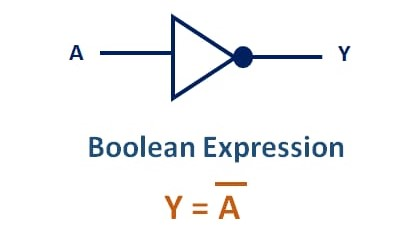
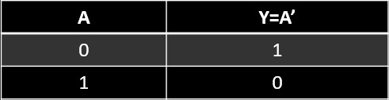

NOT GATE
A NOT gate, often called an inverter, is a nice digital logic gate to start with because it has only a single input with simple behavior. A NOT gate performs logical negation on its input. In other words, if the input is true, then the output will be false. Similarly, a false input results in a true output.
Logic Diagram:
Truth Table:
